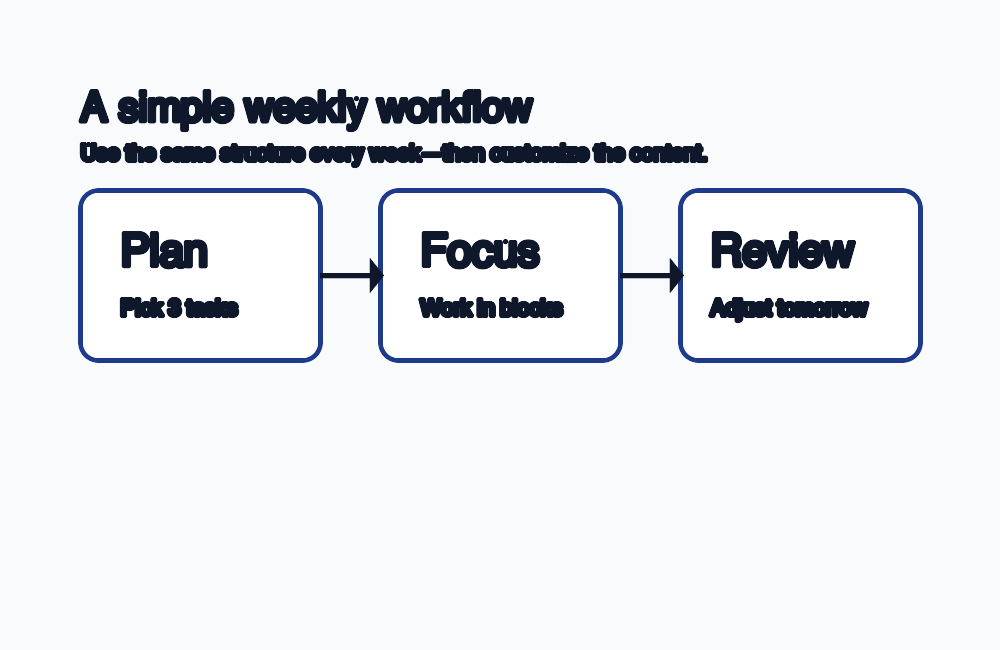

Easy templates
Start with a one-page plan and fill it in using your own words. No accounts, no clutter.
FocusForge is a minimal weekly system for choosing what matters, working in focus blocks, and reviewing what you learned.
Get started with a weekly planStart with a one-page plan and fill it in using your own words. No accounts, no clutter.
Work in short sessions, then take real breaks. The workflow is consistent even when the week isn't.
Clear headings, readable structure, and descriptive links support screen readers and quick scanning.
This structure highlights a key idea: you do not need a perfect plan; you need a plan you will actually revisit.

Use a weekly checklist and a short reflection to build momentum without overplanning.
Ask for a sample template by emailTurn one weekly plan into shared roles, meeting notes, and a clear next step for everyone.
Review the three core featuresPick a goal for this week and make your first plan in under five minutes.
Get started with the overview